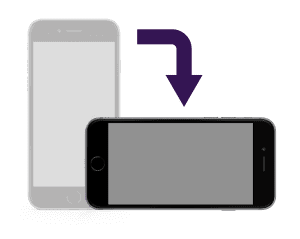

Нужно повернуть
Обложка
Содержание
Хроники Орбереса. Джин и Ева : Глава 1
Death : Глава 1
Death : Глава 2
Death : Глава 3
Интервью с автором "Death"
Путник : Сингл
Аниме-новости
Рецензия
НАВИГАЦИЯ
ГЛАВНАЯ
ВЫБОР ВЫПУСКА